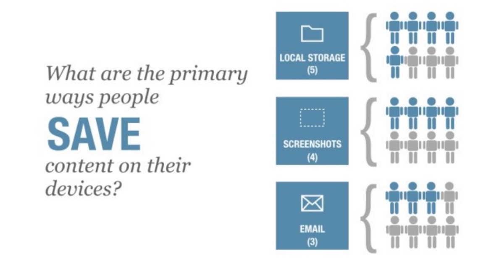
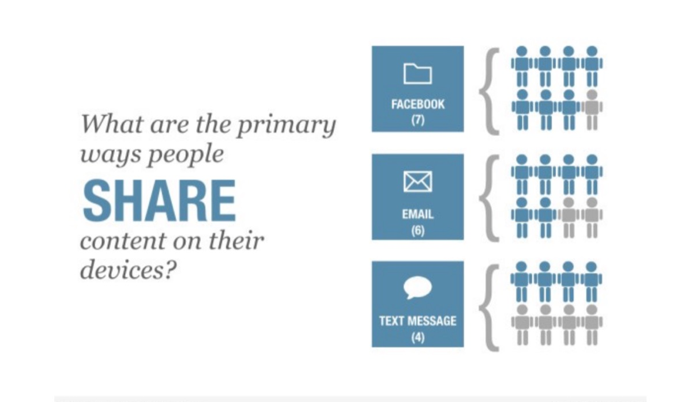
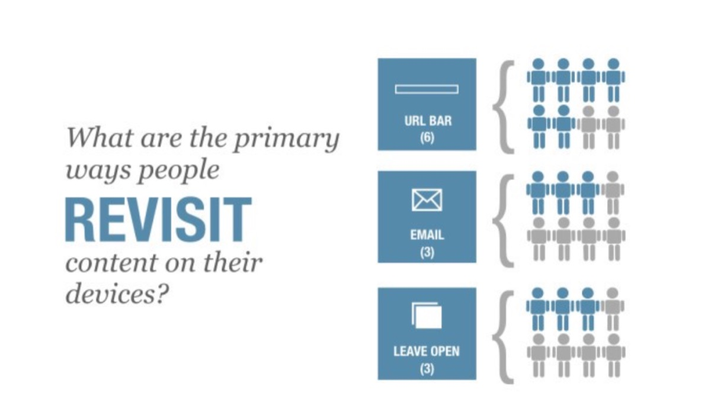

Save, Share, Revisit

In early January, we conducted user research to refresh our understanding of how people save, share, and revisit content with the goal of building our knowledge base for a larger contextual research project on multi-device task continuity that is currently being conducted. (More on that in a future blog post.)
Methodology
We recruited eight participants to engage in a three-day diary study to document their save, share, and revisiting behavior. Instructions were emailed to participants each morning based on daily themes: Saving, Sharing, Retrieving. Each evening, the participants were prompted to submit their diary entries and answer a few additional questions. Based on these responses, half of the participants were selected to participate in an additional 60-minute video interview with the researcher to explore these themes in greater detail.
Primary Findings
Most people are using low-tech systems to save, share, and manage their content. There is a tendency in tech circles to overestimate the popularity of services like Pocket and Evernote, when in fact the most competitive task continuity resources are basic services like email, local storage, text messages, and screenshots.
Most people are aware that their personal system isn’t perfect, and in fact often cumbersome to maintain, but other solutions are perceived as some combination of absent, confusing, or limited by storage/price.

People tend to save content to their devices, rather than to third-party systems. Some of the participants had tried services like Dropbox or iCloud, but abandoned them when they ran out of free storage space. Utilizing free local storage means people always know where to find things. If saving locally isn’t possible, people will often take a screenshot of the content or send it to their own email account in order to save it.
“If there’s a way I can physically save the article I would save it to my device or SIM card. If I can’t do that, I will take a screenshot of the articles and later go back and view them” — P6
“I found a picture of a toy I want to buy my daughter. I took a screenshot on my phone and I will go to the link in the pic using my computer later to show my mom.” -P2
For most participants, alternate device access was not a big concern when saving content. In fact, most of the time, people intended to revisit on the same device. When saving content, most people intended to revisit it within a short time frame — usually the same day or within a few days. This was due to the fact that people believed they would “forget” to return to the content if too much time passed.

For many participants, the line between sharing and saving was blurred. The primary methods for sharing content — Facebook, email, and text messages — where valued not only because they made it easy to share, but because they also made it easy to revisit.
“Social media and email services make it easy to revisit content because they log and save everything.” — P3
“I found Crockpot recipes on Facebook that I wanted to try, so I re-posted it to my Facebook wall.” — P7

Participants used a variety of low-tech methods to revisit content. The primary methods included relying on the URL bar to autocomplete URLS based on browser history, following links in emails, and leaving browser windows open.
Further Research
The Firefox UX research team is currently conducting a contextual user research project in multiple cities to learn more about multi-device task continuity strategies. These findings will add depth to our current understanding and help us design experiences that will support and expand on these user patterns. Stay tuned for more information on this work.
Originally published at blog.mozilla.org. on Feburary 23, 2015